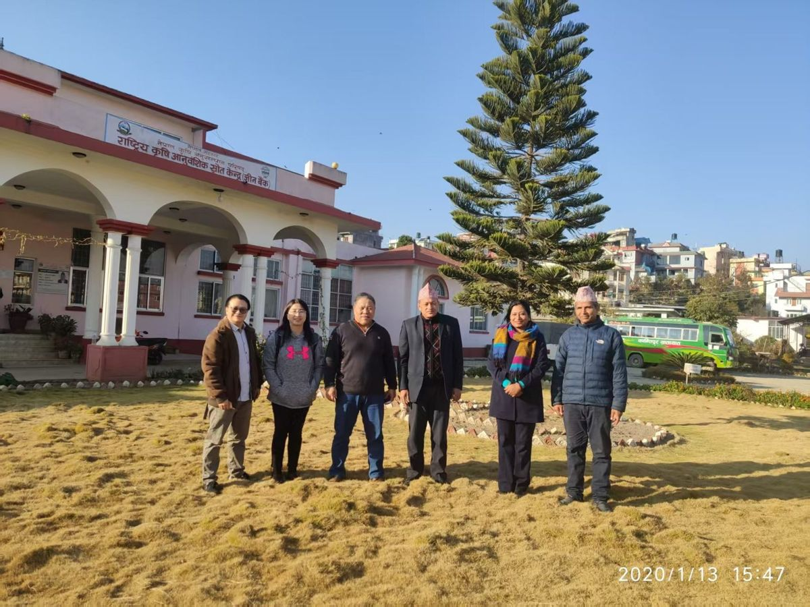
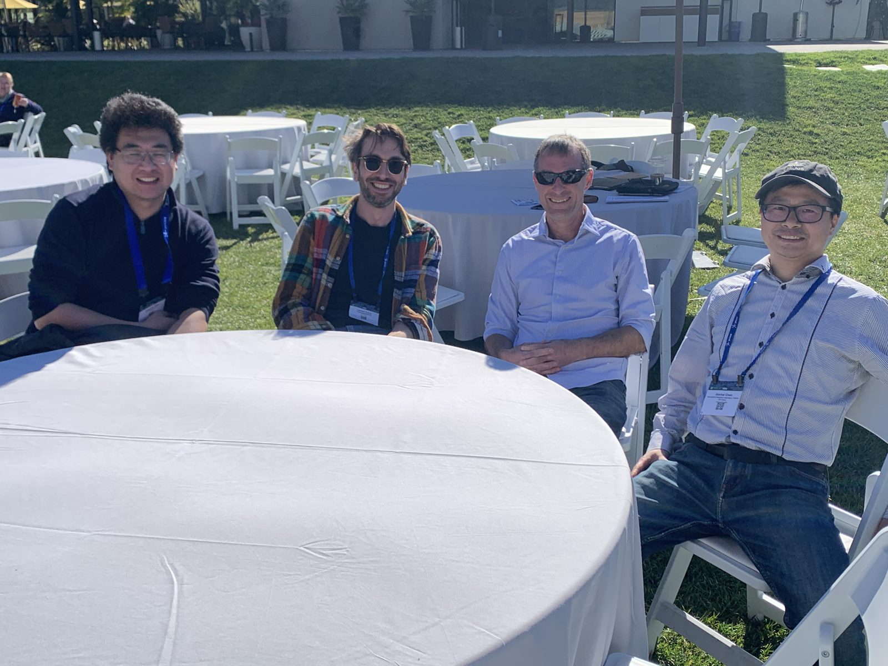

Project story / Accepted by Science
South Asian wild boar and pig genomics
A ten-year project on wild boar origin, domestic pigs, and population genomics.
This project is about wild boars and domestic pigs, but the story behind it started much earlier than the first dataset or the first analysis script.
When I was a child, I liked watching agricultural programs on television. I was curious about almost everything: how plants were grown, how animals were raised, how fields were managed, and why people made different decisions in different seasons. I did not have a clear scientific plan at that time. I simply liked looking at living things and wondering how they were connected to land, food, and people.
Entering an agricultural university was not exactly part of my original plan. In fact, I first imagined that I might become an English teacher. Life took a different turn, almost by accident, and I entered Huazhong Agricultural University. Looking back, that accident became important. It gave me a way to return to those early questions, but with genetics, genomics, and evolution as tools.
In 2014, while I was affiliated with the College of Animal Science and Technology at Huazhong Agricultural University, we decided to initiate a project on the genomic analysis of wild boars and domestic pigs from South Asia and Southeast Asia. The question was broad: could genome-wide data help us better understand wild boar origin, pig domestication, and population history in a region that had not received enough attention?

The project was fortunate to receive strong support from my mentor Dr. Shuhong Zhao, as well as Prof. Xuewen Xu and Prof. Xinyun Li, and important academic insights from Dr. Jianlin Han and many coauthors, including Dr. Xiaoyong Du, Dr. Zhuqing Zheng, and others. Over the years, the work moved with me across different stages, including my later time in the Department of Ecology and Evolution at the University of Chicago. The analysis gradually became more than a regional population genetics project; it became a way to revisit a long-standing story about wild boar history.

The project also owes a great deal to Dr. Greger Larson, Dr. Laurent Frantz, and Dr. Lingzhao Fang, whose contributions were enormous. We had several in-depth discussions together at the Plant and Animal Genome (PAG) Conference, followed by many online meetings over the years. Laurent even traveled to China specifically for this project and spent several months there discussing the work with our team. Their expertise, critical questions, and generosity shaped how we analyzed the data and how we understood the history of wild boars and pigs. Their earlier work on the evolution of wild boars, pigs, and the wider pig family (Suidae) also laid a solid foundation on which our project was built (Frantz et al., 2016).
Our manuscript has now been written and submitted. The review process has already taken about two years, and the paper is accepted in Science. The title is: Ancient introgression drives wild boar expansion and phenotypic diversification of domestic pigs. Please see https://www.science.org/doi/10.1126/science.adq7553.
Welcome to the South-Asian-Wild-boar-and-pig research project. The primary dataset is available on Zenodo, and the project documentation and population genomics pipeline are collected in the GitHub Wiki.
References
Rothschild, M. F., & Ruvinsky, A. (Eds.). The Genetics of the Pig. CABI, 2011.
Larson, G., Dobney, K., Albarella, U., Fang, M., Matisoo-Smith, E., Robins, J., Lowden, S., Finlayson, H., Brand, T., Willerslev, E., Rowley-Conwy, P., Andersson, L., & Cooper, A. Worldwide phylogeography of wild boar reveals multiple centers of pig domestication. Science 307(5715), 1618-1621, 2005. doi: 10.1126/science.1106927.
Frantz, L., Meijaard, E., Gongora, J., Haile, J., Groenen, M. A. M., & Larson, G. The Evolution of Suidae. Annual Review of Animal Biosciences 4, 61-85, 2016. doi: 10.1146/annurev-animal-021815-111155.